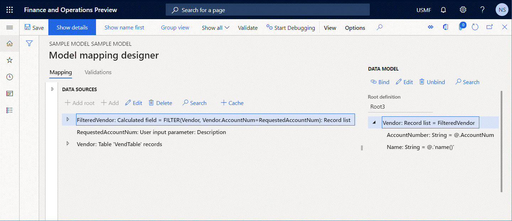

Inspect the configured ER component to prevent runtime issues
Every configured Electronic reporting (ER) format and model mapping component can be validated at design time. During this validation, a consistency check runs to help prevent runtime issues that might occur, such as execution errors and performance degradation. For every issue found, the check provides the path of a problematic element. For some issues, an automatic fix is available.
By default, the validation is automatically applied in the following cases for an ER configuration that contains the previously mentioned ER components:
- You import a new version of an ER configuration into your instance of Microsoft Dynamics 365 Finance.
- You change the status of the editable ER configuration from Draft to Completed.
- You rebase an editable ER configuration by applying a new base version.
You can explicitly run this validation. Select one of the following three options, and follow the steps that are provided:
Option 1:
- Go to Organization administration > Electronic reporting > Configurations.
- In the configurations tree in the left pane, select the desired ER configuration that contains the ER format or ER model mapping component.
- On the Versions FastTab, select the desired version of the selected ER configuration.
- On the Action Pane, select Validate.
Option 2, for an ER format:
- Go to Organization administration > Electronic reporting > Configurations.
- In the configurations tree in the left pane, select the desired ER configuration that contains the ER format component.
- On the Versions FastTab, select the desired version of the selected ER configuration.
- On the Action Pane, select Designer.
- On the Format designer page, on the Action Pane, select Validate.
Option 3, for an ER model mapping:
- Go to Organization administration > Electronic reporting > Configurations.
- In the configurations tree in the left pane, select the desired ER configuration that contains the ER model mapping component.
- On the Versions FastTab, select the desired version of the selected ER configuration.
- On the Action Pane, select Designer.
- On the Model to datasource mapping page, on the Action Pane, select Designer.
- On the Model mapping designer page, on the Action Pane, select Validate.
To skip the validation when the configuration is imported, follow these steps.
- Go to Organization administration > Electronic reporting > Configurations.
- On the Configurations page, on the Action Pane, on the Configurations tab, in the Advanced settings group, select User parameters.
- Set the Validate the configuration after importing option to No.
To skip the validation when you change or rebase the version's status, follow these steps.
- Go to Organization administration > Electronic reporting > Configurations.
- On the Configurations page, on the Action Pane, on the Configurations tab, in the Advanced settings group, select User parameters.
- Set the Skip validation at configuration's status change and rebase option to Yes.
ER uses the following categories to group consistency check inspections:
- Executability – Inspections that detect critical issues that might happen at runtime. These issues are mostly at an Error level.
- Performance – Inspections that detect issues that might cause inefficient execution of configured ER components. These issues are mostly at a Warning level.
- Data integrity – Inspections that detect issues that might cause data loss or runtime issues. These issues are mostly at a Warning level.
List of inspections
The following table provides an overview of the inspections that ER provides. For more information about these inspections, use the links in the first column to go to the relevant sections of this topic. Those sections explain the types of components that ER provides inspections for and how you can reconfigure ER components to help prevent issues.
| Name | Category | Level | Message |
|---|---|---|---|
| Type conversion | Executability | Error |
Cannot convert expression of type <type> to field of type <type>. Runtime error: Exception for type |
| Type compatibility | Executability | Error |
The configured expression cannot be used as the binding of the current format element to a data source as this expression returns value of the data type <type> that is beyond the scope of data types that are supported by the current format element of type <type>. Runtime error: Exception of type |
| Missing configuration element | Executability | Error |
Path not found <path>. Runtime error: Element of the configuration <path> not found |
| Executability of an expression with FILTER function | Executability | Error |
The list expression of FILTER function is not queryable. Runtime error: Filtering is not supported. Validate the configuration to get more details about this. |
| Executability of a GROUPBY data source | Executability | Error | Path <path> does not support querying. |
| Executability | Error |
Group by function cannot be executed with query. Runtime error: Group by function can't be executed with query. |
|
| Executability of a JOIN data source | Executability | Error |
Cannot join a list <path> that is not a filter in query. Runtime error: Function Joined datasource should be a filter expression calculated field has been incorrectly called. |
| Preferability of FILTER vs WHERE function | Performance | Warning | Using FILTER function for the expression is preferable than WHERE from the performance perspective. Select Fix to replace it automatically. |
| Preferability of ALLITEMSQUERY vs ALLITEMS function | Performance | Warning | Using ALLITEMSQUERY function for the expression is preferable than ALLITEMS from the performance perspective. Select Fix to replace it automatically. |
| Consideration of empty list cases | Executability | Warning |
List <path> does not have any check for empty list case, it can result an error at run time. Add a check for empty list case. Runtime error: List is empty at <path> Potential issue: Line is getting populated once while a data source it is populated from contains multiple records |
| Executability of an expression with FILTER function (caching) | Executability | Error |
FILTER function cannot be applied to the selected type of data source. A data source of the Table records type is applicable only when it is not cached and has no manually added nested data sources. Runtime error: Filtering is not supported. Validate the configuration to get more details about this. |
| Missing binding | Executability | Warning |
Path <path> has no binding to any datasource in using model's mapping. Runtime error: Path <path> is not bound |
| Not linked template | Data integrity | Warning | File <name> is linked to no file components and will be removed after changing status of configuration version. |
| Not synced format | Data integrity | Warning | Defined name <component name> does not exist in Excel sheet <sheet name> |
Type conversion
ER checks whether the data type of a data model field is compatible with the data type of an expression that is configured as the binding of that field. If the data types are incompatible, a validation error occurs in the ER model-mapping designer. The message that you receive states that ER can't convert an expression of type A to a field of type B.
The following steps show how this issue might occur.
Start to configure the ER data model and the ER model-mapping components simultaneously.
In the data model tree, add a field that is named X, and select Integer as the data type.

In the model-mapping data sources pane, add a data source of the Calculated field type.
Name the new data source Y, and configure it so that it contains the expression
INTVALUE(100).Bind X to Y.
In the data model designer, change the data type of the X field from Integer to Int64.
Select Validate to inspect the editable model-mapping component on the Model mapping designer page.

Select Validate to inspect the model-mapping component of the selected ER configuration on the Configurations page.

Notice that a validation error occurs. The message states that the value of the Integer type that the
INTVALUE(100)expression of the Y data source returns can't be stored in the X data model field of the Int64 type.
The following illustration shows the runtime error that occurs if you ignore the warning and select Run to run a format that is configured to use the model-mapping.
Automatic resolution
No option to automatically fix this issue is available.
Manual resolution
Option 1
Update the data model structure by changing the data type of the data model field so that it matches the data type of the expression that is configured for the binding of that field. For the preceding example, the data type of the X field must be changed back to Integer.
Option 2
Update the model-mapping by changing the expression of the data source that is bound with the data model field. For the preceding example, the expression of the Y data source must be changed to INT64VALUE(100).
Type compatibility
ER checks whether the data type of a format element is compatible with the data type of an expression that is configured as the binding of that format element. If the data types are incompatible, a validation error occurs in the ER Operations designer. The message that you receive states that the configured expression can't be used as the binding of the current format element to a data source, because the expression returns a value of data type A that is beyond the scope of the data types that are supported by the current format element of type B.
The following steps show how this issue might occur.
Start to configure the ER data model and the ER format components simultaneously.
In the data model tree, add a field that is named X, and select Integer as the data type.
In the format structure tree, add a format element of the Numeric type.
Name the new format element Y. In the Numeric type field, select Integer as the data type.
Bind X to Y.
In the format structure tree, change the data type of the Y format element from Integer to Int64.
Select Validate to inspect the editable format component on the Format designer page.

Notice that a validation error occurs. The message states that the configured expression can accept only Int64 values. Therefore, the value of the X data model field of the Integer type can't be entered in the Y format element.
Automatic resolution
No option to automatically fix this issue is available.
Manual resolution
Option 1
Update the format structure by changing the data type of the Numeric format element so that it matches the data type of the expression that you configured for the binding of that element. In the preceding example, the Numeric type value of the X format element must be changed back to Integer.
Option 2
Update the format mapping of the X format element by changing the expression from model.X to INT64VALUE(model.X).
Missing configuration element
ER checks whether the binding expressions contain only data sources that are configured in the editable ER component. For every binding that contains a data source that is missing in the editable ER component, a validation error occurs in the ER Operations designer or the ER model-mapping designer.
The following steps show how this issue might occur.
Start to configure the ER data model and the ER model-mapping components simultaneously.
In the data model tree, add a field that is named X, and select Integer as the data type.
In the model-mapping data sources pane, add a data source of the Calculated field type.
Name the new data source Y, and configure it so that it contains the expression
INTVALUE(100).Bind X to Y.
In the model-mapping designer, in the data sources pane, delete the Y data source.
Select Validate to inspect the editable model-mapping component on the Model mapping designer page.

Notice that a validation error occurs. The message states that the binding of the X data model field contains the path that refers to the Y data source, but this data source isn't found.
Automatic resolution
Select Unbind to automatically fix this issue by removing the missing data source binding.
Manual resolution
Option 1
Unbind the X data model field to stop referring to the nonexistent Y data source.
Option 2
In the data sources pane of the ER model-mapping designer, add the Y data source again.
Executability of an expression with FILTER function
The built-in FILTER ER function is used to access application tables, views, or data entities by placing a single SQL call to get the required data as a list of records. A data source of the Record list type is used as an argument of this function and specifies the application source for the call. ER checks whether a direct SQL query can be established to a data source that is referred to in the FILTER function. If a direct query can't be established, a validation error occurs in the ER model-mapping designer. The message that you receive states that the ER expression that includes the FILTER function can't be run at runtime.
The following steps show how this issue might occur.
Start to configure the ER model-mapping component.
Add a data source of the Dynamics 365 for Operations \ Table records type.
Name the new data source Vendor. In the Table field, select VendTable to specify that this data source will request the VendTable table.
Add a data source of the Calculated field type.
Name the new data source FilteredVendor, and configure it so that it contains the expression
FILTER(Vendor, Vendor.AccountNum="US-101").Select Validate to inspect the editable model-mapping component on the Model mapping designer page and verify that the
FILTER(Vendor, Vendor.AccountNum="US-101")expression in the Vendor data source can be queried.Modify the Vendor data source by adding a nested field of the Calculated field type to get the trimmed vendor account number.
Name the new nested field $AccNumber, and configure it so that it contains the expression
TRIM(Vendor.AccountNum).Select Validate to inspect the editable model-mapping component on the Model mapping designer page and verify that the
FILTER(Vendor, Vendor.AccountNum="US-101")expression in the Vendor data source can be queried.
Notice that a validation error occurs, because the Vendor data source contains a nested field of the Calculated field type that doesn't allow the expression of the FilteredVendor data source to be translated to the direct SQL statement.
The following illustration shows the runtime error that occurs if you ignore the warning and select Run to run a format that is configured to use the model-mapping.

Automatic resolution
No option to automatically fix this issue is available.
Manual resolution
Option 1
Instead of adding a nested field of the Calculated field type to the Vendor data source, add the $AccNumber nested field to the FilteredVendor data source, and configure it so that it contains the expression TRIM(FilteredVendor.AccountNum). In this way, the FILTER(Vendor, Vendor.AccountNum="US-101") expression can be run at the SQL level and calculate the $AccNumber nested field afterward.
Option 2
Change the expression of the FilteredVendor data source from FILTER(Vendor, Vendor.AccountNum="US-101") to WHERE(Vendor, Vendor.AccountNum="US-101"). We don't recommend that you change the expression for a table that has a large volume of data (transactional table), because all records will be fetched, and selection of the required records will be done in memory. Therefore, this approach can cause poor performance. For more information, see WHERE ER function.
Executability of a GROUPBY data source
The GROUPBY data source divides the query result into groups of records, usually for the purpose of doing one or more aggregations on each group. Every GROUPBY data source can be configured so that it's run either at the database level or in memory. When a GROUPBY data source is configured so that it's run at the database level, ER checks whether a direct SQL query can be established to a data source that is referred to in that data source. If a direct query can't be established, a validation error occurs in the ER model-mapping designer. The message that you receive states that the configured GROUPBY data source can't be run at runtime.
The following steps show how this issue might occur.
Start to configure the ER model-mapping component.
Add a data source of the Dynamics 365 for Operations \ Table records type.
Name the new data source Trans. In the Table field, select VendTrans to specify that this data source will request the VendTrans table.
Add a data source of the Group by type.
Name the new data source GroupedTrans, and configure it in the following way:
- Select the Trans data source as the source of records that should be grouped.
- In the Execution location field, select Query to specify that you want to run this data source at the database level.

Select Validate to inspect the editable model-mapping component on the Model mapping designer page and verify that the configured GroupedTrans data source can be queried.
Modify the Trans data source by adding a nested field of the Calculated field type to get the trimmed vendor account number.
Name the new data source $AccNumber, and configure it so that it contains the expression
TRIM(Trans.AccountNum).
Select Validate to inspect the editable model-mapping component on the Model mapping designer page and verify that the configured GroupedTrans data source can be queried.

Notice that a validation error occurs, because the Trans data source contains a nested field of the Calculated field type that doesn't allow the call for the GroupedTrans data source to be translated to the direct SQL statement.
The following illustration shows the runtime error that occurs if you ignore the warning and select Run to run a format that is configured to use the model-mapping.

Automatic resolution
No option to automatically fix this issue is available.
Manual resolution
Option 1
Instead of adding a nested field of the Calculated field type to the Trans data source, add the $AccNumber nested field for the GroupedTrans.lines item of the GroupedTrans data source, and configure it so that it contains the expression TRIM(GroupedTrans.lines.AccountNum). In this way, the GroupedTrans data source can be run at the SQL level and calculate the $AccNumber nested field afterward.
Option 2
Change the value of the Execution location field for the GroupedTrans data source from Query to In memory. We don't recommend that you change the value for a table that has a large volume of data (transactional table), because all records will be fetched, and grouping and aggregation will be done in memory. Therefore, this approach can cause poor performance.
Executability of a JOIN data source
The JOIN data source combines records from two or more database tables, based on related fields. Every JOIN data source can be configured so that it's run either at the database level or in memory. When a JOIN data source is configured so that it's run at the database level, ER checks whether a direct SQL query can be established to data sources that are referred to in that data source. If a direct SQL query can't be established with at least one referenced data source, a validation error occurs in the ER model-mapping designer. The message that you receive states that the configured JOIN data source can't be run at runtime.
The following steps show how this issue might occur.
Start to configure the ER model-mapping component.
Add a data source of the Dynamics 365 for Operations \ Table records type.
Name the new data source Vendor. In the Table field, select VendTable to specify that this data source will request the VendTable table.
Add a data source of the Dynamics 365 for Operations \ Table records type.
Name the new data source Trans. In the Table field, select VendTrans to specify that this data source will request the VendTrans table.
Add a data source of the Calculated field type as the nested field of the Vendor data source.
Name the new data source FilteredTrans, and configure it so that it contains the expression
FILTER(Trans, Trans.AccountNum=Vendor.AccountNum).Add a data source of the Join type.
Name the new data source JoinedList, and configure it in the following way:
- Add the Vendor data source as the first set of records to join.
- Add the Vendor.FilteredTrans data source as the second set of records to join. Select INNER as the type.
- In the Execute field, select Query to specify that you want to run this data source at the database level.

Select Validate to inspect the editable model-mapping component on the Model mapping designer page and verify that the configured JoinedList data source can be queried.
Change the expression of the Vendor.FilteredTrans data source from
FILTER(Trans, Trans.AccountNum=Vendor.AccountNum)toWHERE(Trans, Trans.AccountNum=Vendor.AccountNum).Select Validate to inspect the editable model-mapping component on the Model mapping designer page and verify that the configured JoinedList data source can be queried.

Notice that a validation error occurs, because the expression of the Vendor.FilteredTrans data source can't be translated to the direct SQL call. Additionally, the direct SQL call doesn't allow the call for the JoinedList data source to be translated to the direct SQL statement.

The following illustration shows the runtime error that occurs if you ignore the warning and select Run to run a format that is configured to use the model-mapping.

Automatic resolution
No option to automatically fix this issue is available.
Manual resolution
Option 1
Change the expression of the Vendor.FilteredTrans data source from WHERE(Trans, Trans.AccountNum=Vendor.AccountNum) back to FILTER(Trans, Trans.AccountNum=Vendor.AccountNum), as the warning advised.

Option 2
Change the value of the Execute field for the JoinedList data source from Query to In memory. We don't recommend that you change the value for a table that has a large volume of data (transactional table), because all records will be fetched, and the join occurs in memory. Therefore, this approach can cause poor performance. A validation warning is shown to inform you about this risk.
Preferability of FILTER vs WHERE function
The built-in FILTER ER function is used to access application tables, views, or data entities by placing a single SQL call to get the required data as a list of records. The WHERE function fetches all records from the given source and does record selection in memory. A data source of the Record list type is used as an argument of both functions and specifies a source for getting records. ER checks whether a direct SQL call can be established to a data source that is referred to in the WHERE function. If a direct call can be established, a validation warning occurs in the ER model-mapping designer. The message that you receive recommends that you use the FILTER function instead of the WHERE function to help improve efficiency.
The following steps show how this issue might occur.
Start to configure the ER model-mapping component.
Add a data source of the Dynamics 365 for Operations \ Table records type.
Name the new data source Trans. In the Table field, select VendTrans to specify that this data source will request the VendTrans table.
Add a data source of the Calculated field type as the nested field of the Vendor data source.
Name the new data source FilteredTrans, and configure it so that it contains the expression
WHERE(Trans, Trans.AccountNum="US-101").Add a data source of the Dynamics 365 for Operations \ Table records type.
Name the new data source Vendor. In the Table field, select VendTable to specify that this data source will request the VendTable table.
Add a data source of the Calculated field type.
Name the new data source FilteredVendor, and configure it so that it contains the expression
WHERE(Vendor, Vendor.AccountNum="US-101").Select Validate to inspect the editable model-mapping component on the Model mapping designer page.

Notice that validation warnings recommend that you use the FILTER function instead of the WHERE function for the FilteredVendor and FilteredTrans data sources.

Automatic resolution
Select Fix to automatically replace the WHERE function with the FILTER function in the expression of all data sources that appear in the grid on the Warnings tab for this type of inspection.
Alternatively, you can select the row for a single warning in the grid and then select Fix selected. In this case, the expression is automatically changed only in the data source that is mentioned in the selected warning.

Manual resolution
You can manually adjust the expressions of all the data sources in the validation grid by replacing the WHERE function with the FILTER function.
Preferability of ALLITEMSQUERY vs ALLITEMS function
The built-in ALLITEMS and ALLITEMSQUERY ER functions return a flattened Record list value that consists of a list of records that represent all items that match the specified path. ER checks whether a direct SQL call can be established to a data source that is referred to in the ALLITEMS function. If a direct call can be established, a validation warning occurs in the ER model-mapping designer. The message that you receive recommends that you use the ALLITEMSQUERY function instead of the ALLITEMS function to help improve efficiency.
The following steps show how this issue might occur.
Start to configure the ER model-mapping component.
Add a data source of the Dynamics 365 for Operations \ Table records type.
Name the new data source Vendor. In the Table field, select VendTable to specify that this data source will request the VendTable table.
Add a data source of the Calculated field type to get records for several vendors.
Name the new data source FilteredVendor, and configure it so that it contains the expression
FILTER(Vendor, OR(Vendor.AccountNum="US-101",Vendor.AccountNum="US-102")).Add a data source of the Calculated field type to get transactions of all filtered vendors.
Name the new data source FilteredVendorTrans, and configure it so that it contains the expression
ALLITEMS(FilteredVendor.'<Relations'.'VendTrans.VendTable_AccountNum').Select Validate to inspect the editable model-mapping component on the Model mapping designer page.

Notice that a validation warning occurs. The message recommends that you use the ALLITEMSQUERY function instead of the ALLITEMS function for the FilteredVendorTrans data source.

Automatic resolution
Select Fix to automatically replace the ALLITEMS function with the ALLITEMSQUERY function in the expression of all data sources that appear in the grid on the Warnings tab for this type of inspection.
Alternatively, you can select the row for a single warning in the grid and then select Fix selected. In this case, the expression is automatically changed only in the data source that is mentioned in the selected warning.
Manual resolution
You can manually adjust the expressions of all the data sources that are mentioned in the validation grid by replacing the ALLITEMS function with the ALLITEMSQUERY function.
Consideration of empty list cases
You can configure your ER format or model-mapping component to get the field value of a data source of the Record list type. ER checks whether your design considers the case where a data source that is called contains no records (that is, it's empty), to prevent runtime errors when a value is fetched from a field of a nonexistent record.
The following steps show how this issue might occur.
Start to configure the ER data model, the ER model-mapping, and the ER format components simultaneously.
In the data model tree, add a root item that is named Root3.
Modify the Root3 item by adding a nested item of the Record list type.
Name the new nested item Vendor.
Modify the Vendor item in the following way:
- Add a nested field of the String type, and name it Name.
- Add a nested field of the String type, and name it AccountNumber.

In the model-mapping data sources pane, add a data source of the Dynamics 365 for Operations \ Table records type.
Name the new data source Vendor. In the Table field, select VendTable to specify that this data source will request the VendTable table.
Add a data source of the General \ User input parameter type to search for a vendor account in the runtime dialog box.
Name the new data source RequestedAccountNum. In the Label field, enter Vendor account number. In the Operations data type name field, leave the default value, Description.
Add a data source of the Calculated field type to filter a vendor that is inquired about.
Name the new data source FilteredVendor, and configure it so that it contains the expression
FILTER(Vendor, Vendor.AccountNum=RequestedAccountNum).Bind the data model items to configured data sources in the following way:
- Bind FilteredVendor to Vendor.
- Bind FilteredVendor.AccountNum to Vendor.AccountNumber.
- Bind FilteredVendor.'name()' to Vendor.Name.

In the format structure tree, add the following items to generate an outbound document in XML format that contains the vendor details:
Add the Statement root XML element.
For the Statement XML element, add the nested Party XML element.
For the Party XML element, add the following nested XML attributes:
- Name
- AccountNum
Bind format elements to provided data sources in the following way:
- Bind the Statement\Party\Name format element to the model.Vendor.Name data source field.
- Bind the Statement\Party\AccountNum format element to the model.Vendor.AccountNumber data source field.
Select Validate to inspect the editable format component on the Format designer page.

Notice that a validation error occurs. The message states that an error might be thrown for the configured Statement\Party\Name and Statement\Party\AccountNum format components at runtime if the
model.Vendorlist is empty.
The following illustration shows the runtime error that occurs if you ignore the warning, select Run to run the format, and select the account number of a nonexistent vendor. Because the requested vendor doesn't exist, the model.Vendor list will be empty (that is, it will contain no records).

Automatic resolution
For the selected row in the grid on the Warnings tab, you can select Unbind. The binding that is pointed to in the Path column is automatically removed from the format elements.
Manual resolution
Option 1
You can bind the Statement\Party\Name format element to the model.Vendor data source item. At runtime, this binding calls the model.Vendor data source first. When model.Vendor returns an empty record list, the nested format elements aren't run. Therefore, no validation warnings occur for this format configuration.

Option 2
Change the binding of the Statement\Party\Name format element from model.Vendor.Name to FIRSTORNULL(model.Vendor).Name. The updated binding conditionally converts the first record of the model.Vendor data source of the Record list type to a new data source of the Record type. This new data source contains the same set of fields.
- If at least one record is available in the
model.Vendordata source, the fields of that record are filled with the values of the fields of the first record of themodel.Vendordata source. In this case, the updated binding returns the vendor name. - Otherwise, every field of the record that is created is filled with the default value for the data type of that field. In this case, the blank string is returned as the default value of the String data type.
Therefore, no validation warnings occur for the Statement\Party\Name format element when it's bound to the FIRSTORNULL(model.Vendor).Name expression.

Option 3
If you want to explicitly specify the data that is entered in a generated document when the model.Vendor data source of the Record list type returns no records (the text Not available in this example), change the binding of the Statement\Party\Name format element from model.Vendor.Name to IF(NOT(ISEMPTY(model.Vendor)), model.Vendor.Name, "Not available"). You can also use the expression IF(COUNT(model.Vendor)=0, model.Vendor.Name, "Not available").
Additional consideration
The inspection also warns you about another potential issue. By default, as you bind the Statement\Party\Name and Statement\Party\AccountNum format elements to the appropriate fields of the model.Vendor data source of the Record list type, those bindings will be run and will take the values of the appropriate fields of the first record of the model.Vendor data source, if that list isn't empty.
Because you haven't bound the Statement\Party format element with the model.Vendor data source, the Statement\Party element won't be iterated for every record of the model.Vendor data source during format execution. Instead, a generated document will be filled with information from only the first record of the record list, if that list contains multiple records. Therefore, there might be an issue if the format is intended to fill a generated document with information about all vendors from the model.Vendor data source. To fix this issue, bind the Statement\Party element with the model.Vendor data source.
Executability of an expression with FILTER function (caching)
Several built-in ER functions, including FILTER and ALLITEMSQUERY, are used to access application tables, views, or data entities by placing a single SQL call to get the required data as a list of records. A data source of the Record list type is used as an argument of each of these functions and specifies an application source for the call. ER checks whether a direct SQL call can be established to a data source that is referred to in one of these functions. If a direct call can't be established because the data source was marked as cached, a validation error occurs in the ER model-mapping designer. The message that you receive states that the ER expression that contains one of these functions can't be run at runtime.
The following steps show how this issue might occur.
Start to configure the ER model-mapping component.
Add a data source of the Dynamics 365 for Operations \ Table records type.
Name the new data source Vendor. In the Table field, select VendTable to specify that this data source will request the VendTable table.
Add a data source of the General \ User input parameter type to search for a vendor account in the runtime dialog box.
Name the new data source RequestedAccountNum. In the Label field, enter Vendor account number. In the Operations data type name field, leave the default value, Description.
Add a data source of the Calculated field type to filter a vendor that is inquired about.
Name the new data source FilteredVendor, and configure it so that it contains the expression
FILTER(Vendor, Vendor.AccountNum=RequestedAccountNum).Mark the configured Vendor data source as cached.

Select Validate to inspect the editable model-mapping component on the Model mapping designer page.

Notice that a validation error occurs. The message states that the FILTER function can't be applied to the cached Vendor data source.
The following illustration shows the runtime error that occurs if you ignore the warning and select Run to run the format.

Automatic resolution
No option to automatically fix this issue is available.
Manual resolution
Option 1
Remove the Cache flag from the Vendor data source. The FilteredVendor data source will then become executable, but the Vendor data source that is referred to in the VendTable table will be accessed every time that the FilteredVendor data source is called.
Option 2
Change the expression of the FilteredVendor data source from FILTER(Vendor, Vendor.AccountNum="US-101") to WHERE(Vendor, Vendor.AccountNum="US-101"). In this case, the Vendor data source that is referred to in the VendTable table will be accessed only during the first call of the Vendor data source. However, the selection of records will be done in memory. Therefore, this approach can cause poor performance.
Missing binding
When you configure an ER format component, the base ER data model is offered as a default data source for the ER format. When the configured ER format is run, the default model mapping for the base model is used to fill the data model with application data. The ER format designer shows a warning if you bind a format element to a data model item that isn't bound to any data source in the model-mapping that is currently selected as the default model-mapping for the editable format. This type of binding can't be run at runtime, because the format that runs can't fill a bound element with application data. Therefore, an error occurs at runtime.
The following steps show how this issue might occur.
Start to configure the ER data model, the ER model-mapping, and the ER format components simultaneously.
In the data model tree, add a root item that is named Root3.
Modify the Root3 item by adding a new nested item of the Record list type.
Name the new nested item Vendor.
Modify the Vendor item in the following way:
- Add a nested field of the String type, and name it Name.
- Add a nested field of the String type, and name it AccountNumber.

In the model-mapping data sources pane, add a data source of the Dynamics 365 for Operations \ Table records type.
Name the new data source Vendor. In the Table field, select VendTable to specify that this data source will request the VendTable table.
Add a data source of the General \ User input parameter type to inquire about a vendor account in the runtime dialog box. 9 Name the new data source RequestedAccountNum. In the Label field, enter Vendor account number. In the Operations data type name field, leave the default value, Description.
Add a data source of the Calculated field type to filter a vendor that is inquired about.
Name the new data source FilteredVendor, and configure it so that it contains the expression
FILTER(Vendor, Vendor.AccountNum=RequestedAccountNum).Bind the data model items to configured data sources in the following way:
- Bind FilteredVendor to Vendor.
- Bind FilteredVendor.AccountNum to Vendor.AccountNumber.
Note
The Vendor.Name data model field remains unbound.

In the format structure tree, add the following items to generate an outbound document in XML format that contains the details of the vendors that are inquired about:
Add the Statement root XML element.
For the Statement XML element, add the nested Party XML element.
For the Party XML element, add the following nested XML attributes:
- Name
- AccountNum
Bind the format elements to provided data sources in the following way:
- Bind the Statement\Party format element to the
model.Vendordata source item. - Bind the Statement\Party\Name format element to the model.Vendor.Name data source field.
- Bind the Statement\Party\AccountNum format element to the model.Vendor.AccountNumber data source field.
- Bind the Statement\Party format element to the
Select Validate to inspect the editable format component on the Format designer page.

Notice that a validation warning occurs. The message states that the model.Vendor.Name data source field isn't bound to any data source in the model-mapping that is configured to be used by the format. Therefore, the Statement\Party\Name format element might not be filled at runtime, and a runtime exception might occur.

The following illustration shows the runtime error that occurs if you ignore the warning and select Run to run the format.

Automatic resolution
No option to automatically fix this issue is available.
Manual resolution
Option 1
Modify the configured model-mapping by adding a binding for the model.Vendor.Name data source field.
Option 2
Modify the configured format by removing a binding for the Statement\Party\Name format element.
Not linked template
When you manually configure an ER format component to use a template to generate an outbound document, you must manually add the Excel\File element, add the required template as an attachment of the editable component, and select that attachment in the added Excel\File element. In this way, you indicate that the added element will fill the selected template at runtime. When you configure a format component version in Draft status, you might add several templates to the editable component, and then select each template in the Excel\File element to run the ER format. In this way, you can see how different templates are filled at runtime. If you have templates that aren't selected in any Excel\File elements, the ER format designer warns you that those templates will be deleted from the editable ER format component version when its status is changed from Draft to Completed.
The following steps show how this issue might occur.
Start to configure the ER format component.
In the format structure tree, add the Excel\File element.
For the Excel\File element that you just added, add an Excel workbook file, A.xlsx, as an attachment. Use the document type that is configured in the ER parameters (This is an external linThis link was changed due to HTMLfromRepoGenerator) to specify the storage of ER format templates.
For the Excel\File element, add another Excel workbook file, B.xlsx, as an attachment. Use the same document type that is used for workbook file A.
In the Excel\File element, select workbook file A.
Select Validate to inspect the editable format component on the Format designer page.

Notice that a validation warning occurs. The message states that workbook file B.xlsx isn't linked to any components, and that it will be removed after the status of the configuration version is changed.
Automatic resolution
No option to automatically fix this issue is available.
Manual resolution
Modify the configured format by removing all templates that aren't linked to any Excel\File element.
Not synced format
When you configure an ER format component to use an Excel template to generate an outbound document, you can manually add the Excel\File element, add the required template as an attachment of the editable component, and select that attachment in the added Excel\File element. In this way, you indicate that the added element will fill the selected template at runtime. Because the added Excel template has been externally designed, the editable ER format might contain Excel names that are missing from the added template. The ER format designer warns you about any inconsistencies between the properties of the ER format elements that refer to names that aren't included in the added Excel template.
The following steps show how this issue might occur.
Start to configure the ER format component.
In the format structure tree, add the Excel\File element Report.
For the Excel\File element that you just added, add an Excel workbook file, A.xlsx, as an attachment. Use the document type that is configured in the ER parameters (This is an external linThis link was changed due to HTMLfromRepoGenerator) to specify the storage of ER format templates.
Important
Make sure that the added Excel workbook doesn't contain the name ReportTitle.
Add the following Excel\Cell element Title as the nested element of the Report element. In the Excel range field, enter ReportTitle.
Select Validate to inspect the editable format component on the Format designer page.

Notice that a validation warning occurs. The message states that the name ReportTitle doesn't exist on sheet Sheet1 of the Excel template that you're using.

Automatic resolution
No option to automatically fix this issue is available.
Manual resolution
Option 1
Modify the configured format by removing all elements that refer to Excel names that are missing from the template.
Option 2
Update the editable ER format by importing an Excel template. The structure of the editable ER format will be synced with the structure of the imported Excel template.
Additional consideration
To learn how the format structure can be synced with an ER template in the template editor of Business document management, see Update the structure of a business document template.
Additional resources
Use JOIN data sources to get data from multiple application tables in ER model mappings
Trace the execution of ER formats to troubleshoot performance issues